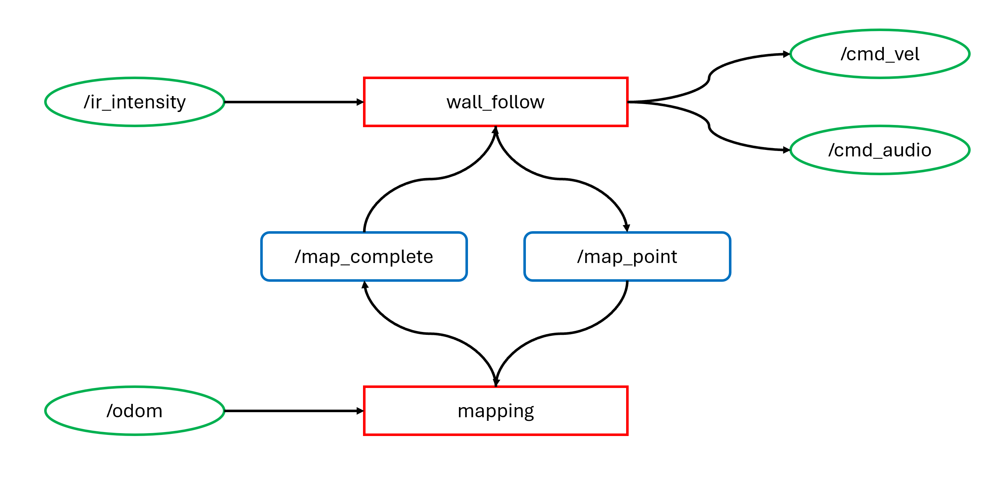

ROS2 Autonomous Robot Navigation & Mapping
Autonomous robot navigation and mapping are integral components of modern robotics, facilitating tasks ranging from exploration to surveillance and beyond. Leveraging the capabilities of ROS2, this project demonstrates a systematic approach to navigate and map a room using an iRobot Create3 robot. Central to the operation are two key nodes: the 'wall_follow' node and the 'mapping' node.
The 'wall_follow' node orchestrates the robot's movement, relying on inputs from its infrared sensors conveyed through the '/ir_intensity' topic. This data informs the robot's behavior as it dynamically adjusts its velocity via the '/cmd_vel' topic while also emitting audible cues through '/cmd_audio'. Additionally, the node interacts with the 'mapping' node through service calls, signaling milestones via '/map_point' and acknowledging completion via '/map_complete'.
Complementing this, the 'mapping' node utilizes odometry data from '/odom' to construct a map of the room. It synchronizes with the 'wall_follow' node through the same service interfaces, ensuring seamless coordination in mapping progress. Crucially, the client-service architecture facilitates unidirectional communication, streamlining the mapping process without inducing unnecessary system overhead.
Through this ROS2 implementation, the project showcases a robust framework for autonomous robot navigation and mapping, emphasizing technical precision and efficiency over mere functionality. The resulting demonstration encapsulates the intricacies of real-world robotics applications, illustrating the fusion of software and hardware in enabling autonomous spatial awareness and maneuvering.